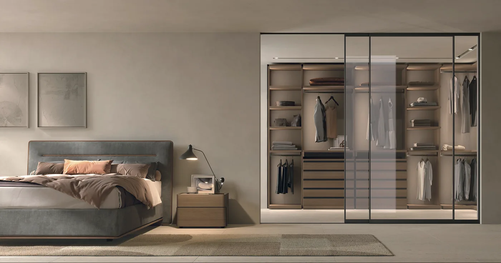
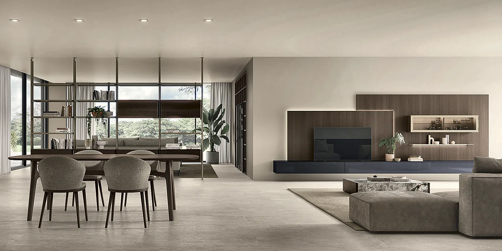

Dressing, sous-pente, bibliothèque
Sur mesure
Dressings, meubles TV et rangements adaptés à votre pièce : systèmes modulables Tomasella ou fabrication spécifique par notre atelier partenaire en Belgique.
- Nous venons chez vous
- Première visite, mesures et devis offerts
- Sans engagement
Ce que nous réalisons
Des rangements adaptés à chaque pièce.
Murs irréguliers, pentes de toit, recoins : nous partons de la pièce telle qu’elle est.
Dressing
Pensé pour votre garde-robe.
Compartiments pensés pour votre garde-robe, finitions assorties à la chambre.

Bibliothèque
Un mur entier.
Un mur entier : niches ouvertes et rangements fermés, selon ce que vous voulez montrer.

Meuble TV
Câbles cachés, équipements intégrés.
Équipements intégrés et câbles cachés, dans une composition accordée au reste du séjour.

Ailleurs
Partout où la place se perd.
Nous repensons l’aménagement pour le confort et la mobilité : des rangements accessibles sans se baisser.
- Sous-pente : des rangements qui suivent la pente du toit
- Entrée et hall : manteaux, chaussures, clés, rangés dès la porte
- Sous l’escalier : tiroirs, placards ou bibliothèque sous les marches

Armoire-dressing à portes coulissantes 
Meuble TV et rangements suspendus 
Façade laquée, poignée intégrée


Deux savoir-faire
Un seul interlocuteur.
-
Un atelier partenaire en Belgique
Pour les pièces uniques : formes atypiques, matériaux choisis avec vous.
-
Tomasella
Pour les systèmes modulables : armoires, dressings, compositions de séjour.
Modules ou sur mesure ? La page Rangements et aménagement aide à choisir.
De la visite à la pose.
-

La rencontre
Au magasin ou chez vous.
-

Les mesures
Chez vous, si vous le souhaitez.
-
Le plan
Façades, poignées et teintes, ajustées avec vous.
-

L’installation
Livraison par nos soins, finitions comprises.

Vous êtes professionnel ?
Nous aménageons aussi vos espaces.
Hôtels et restaurants, bureaux, promoteurs, maisons de repos.
Voir l’espace proVos questions
Avant de commencer.
Que faut-il apporter au magasin ?
Les cotes du mur — largeur, hauteur, profondeur — une photo, et une idée de ce que vous voulez ranger. Sans mesures, nous pouvons venir les relever si vous le souhaitez.
Quel délai faut-il prévoir ?
Visite et mesures dans la semaine, parfois le jour même ; puis huit à dix semaines entre la commande signée et la pose, selon le fabricant et la saison.
Peut-on voir le projet avant de commander ?
Oui. Nous préparons une projection 3D de votre aménagement : vous voyez les volumes, les façades et les teintes avant de décider.
Puis-je assortir le sur mesure à mes meubles existants ?
Oui : nous partons de ce que vous avez déjà.
Parlons de votre projet sur mesure.
Remplissez la fiche ou appelez-nous : nous convenons d’une visite, ou nous vous aiguillons par téléphone.
- Lundi
- 13h30 – 18h30
- Mardi au samedi
- 10h30 – 18h30
- Dimanche
- Fermé
- Téléphone
- 064 46 07 72
- Livraison
- Par nos soins, dans le Hainaut (Binche, La Louvière, Mons, Charleroi…) et la province de Namur
Nous livrons aussi dans le nord de la France. Ailleurs, dont Bruxelles : sur demande.